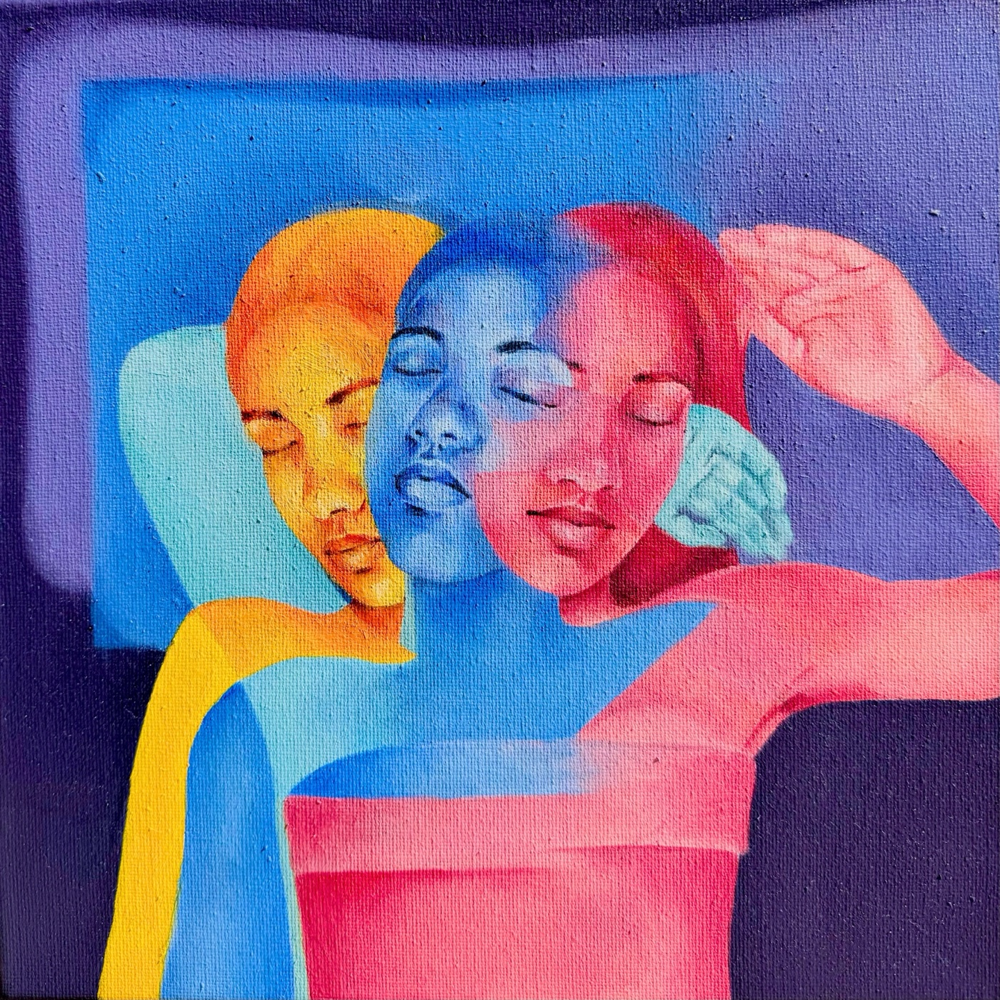
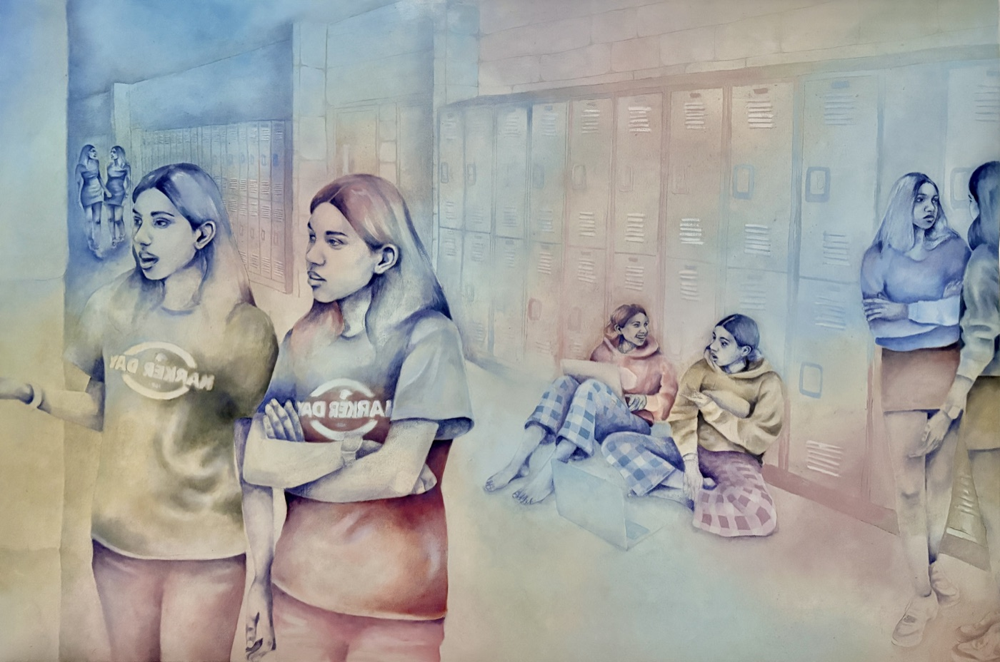
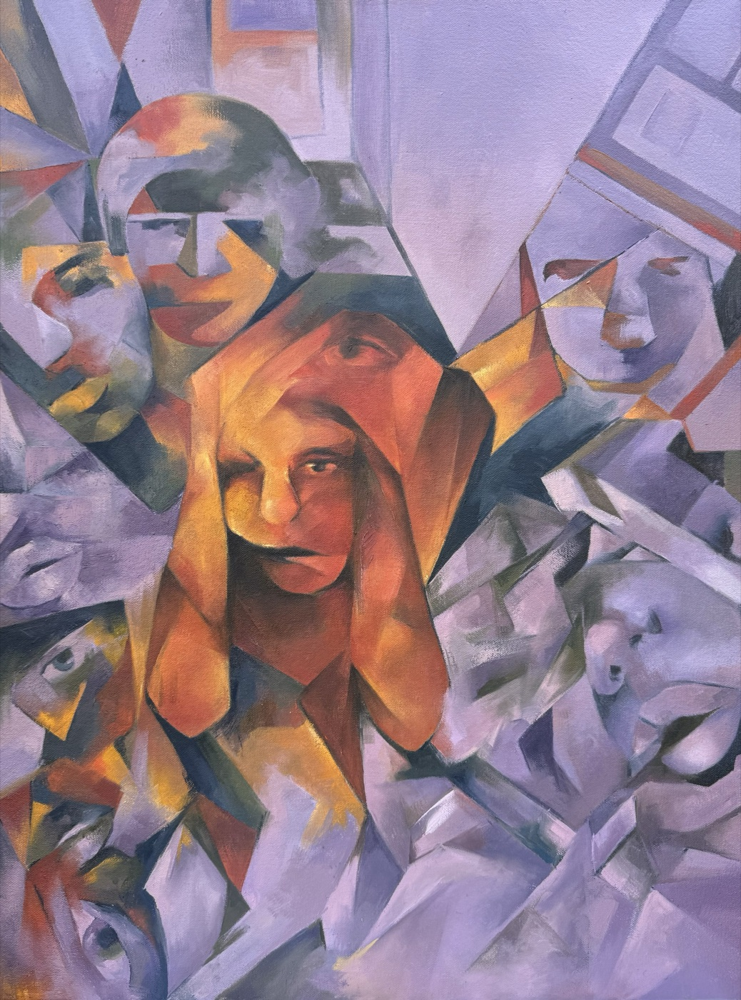
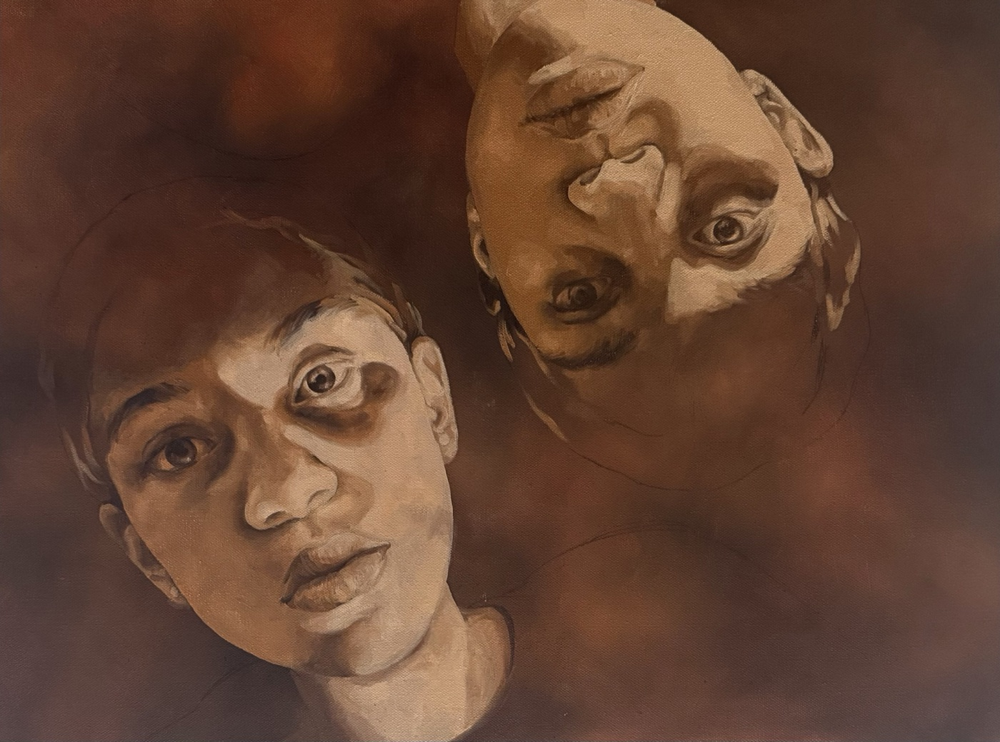
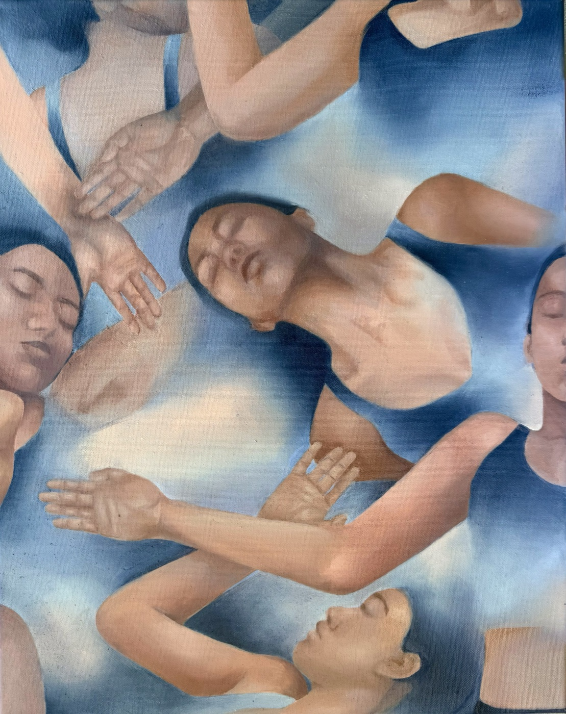
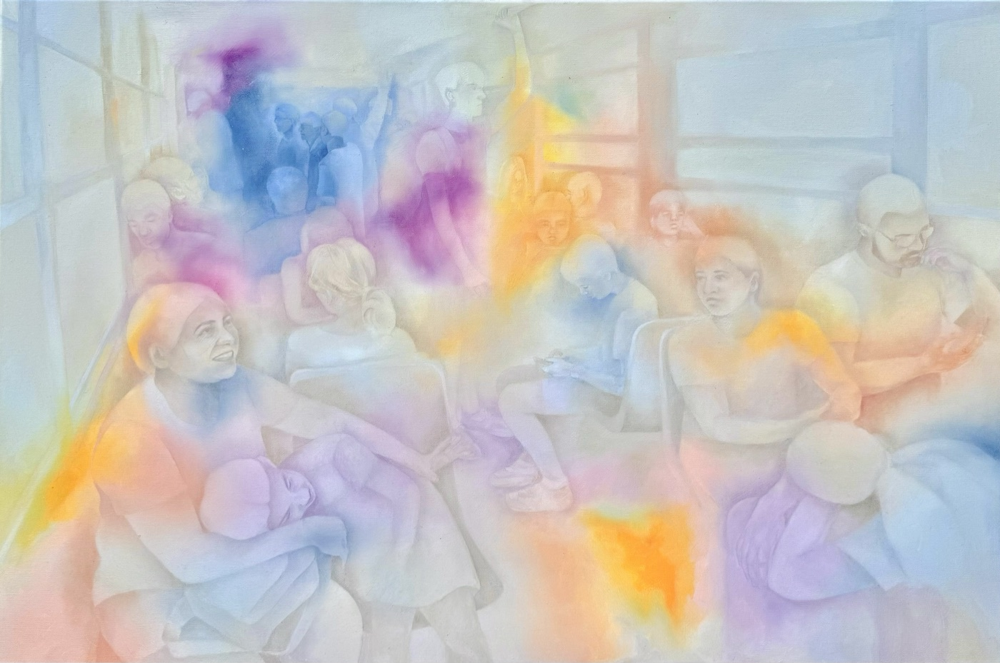

machine learning · agentic engineering · trustworthy AI
Computer Science @ UIUC
I build machine learning systems and work to make them trustworthy. From training RL models to designing agentic pipelines to full-stack development, I am equally energized by deep technical problems and building real systems that can make meaningful impact.
the drift above is an evolving t-SNE visualization of embedding space of words from my poetry, a demo of my interactive solo-exhibition Three Ways of Seeing. it settles if you let it.
an RL options-trading agent
improving an LLM-judge for evaluating my agentic pipeline
the math behind PPO
Thinking Fast and Slow by Daniel Kahneman
training a PPO RL agent in a custom Gymnasium env to trade options
built the end-to-end live trading system to execute trades autonomously
An AI photo-curation product — iOS/Android apps on a FastAPI + Celery cloud backend (ECS, Redis, S3) that selects the best shots from thousands using face embeddings and quality scoring, logging every ML decision for retraining.
An automated re-prompting loop that let 3–7B models beat GPT-4o — +22% instruction-following, two open MIT eval datasets, shipped in AIMon’s Python SDK.
An upcoming solo show on AI & art — including an interactive visualization of embedding space: a t-SNE pipeline in Three.js with WebSockets letting the audience reshape a latent space by hand.
I paint oil self-portraits about identity: figures that look unified but are built from disparate, conflicting selves. A few pieces.






I’m a builder focused on machine learning — LLM evaluation, reinforcement learning, and shipping ML products people actually use. I taught myself the way I like best: by building the whole stack, from a GPT’s backprop up to eval datasets in production and an RL agent trading against a live market. This fall I start CS at Illinois (Grainger).
Research, an internship, a strange ML idea — I’m easiest to reach by email.